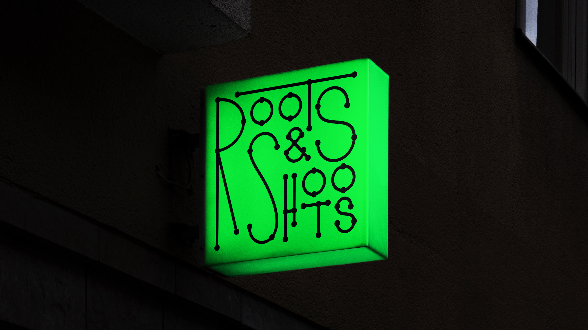
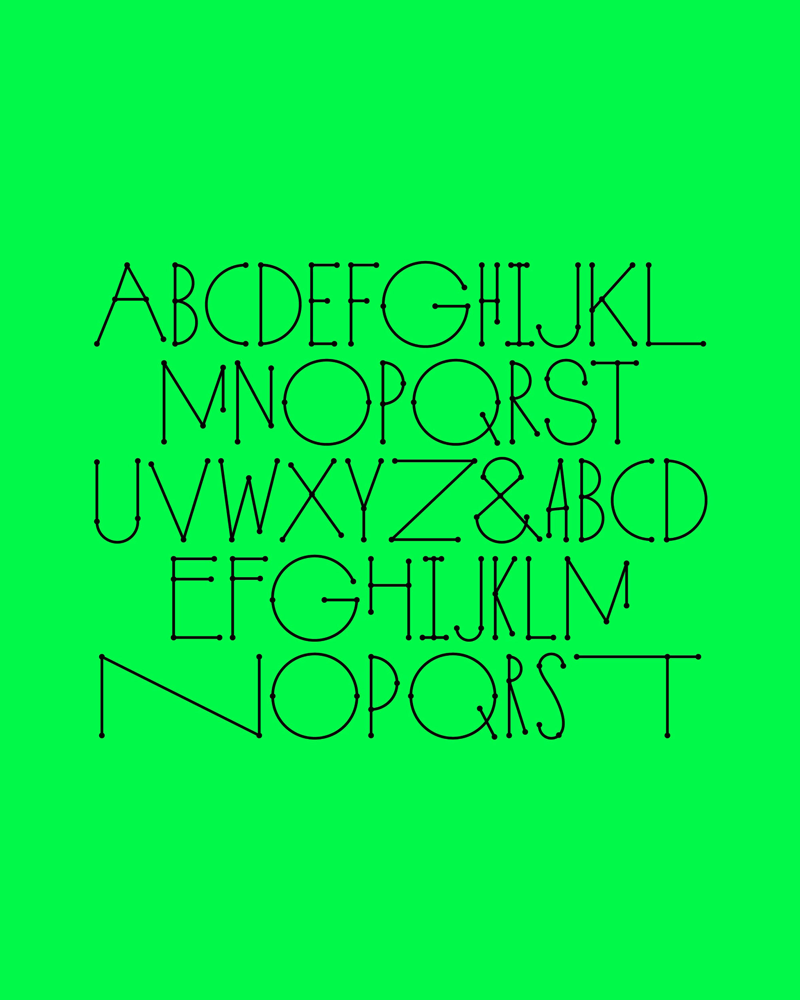
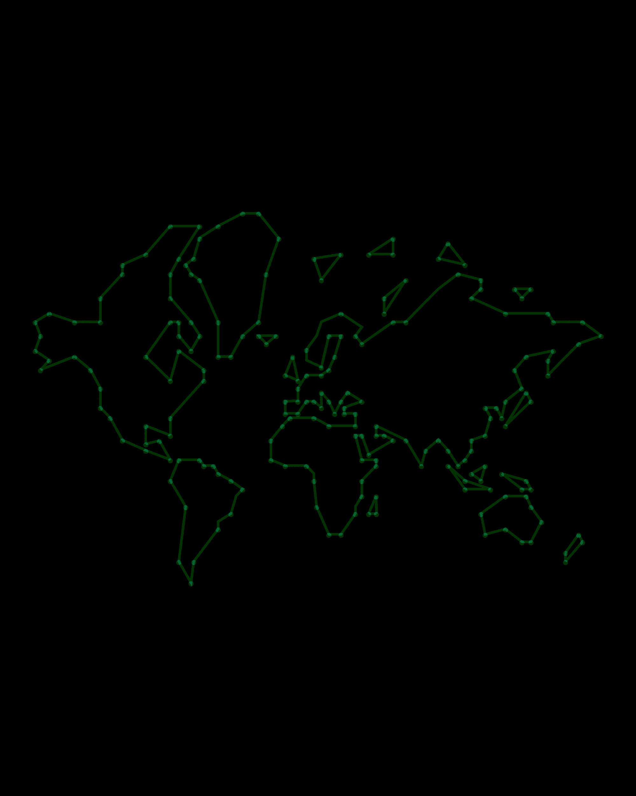
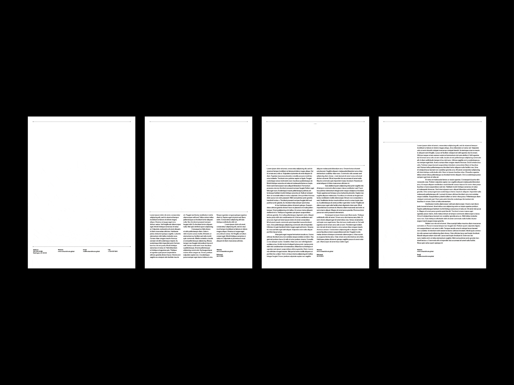
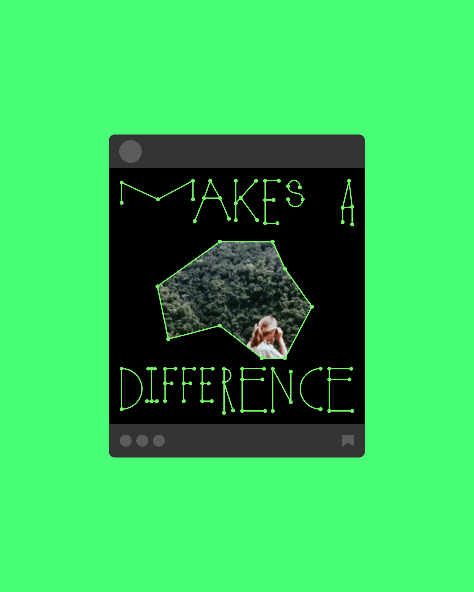
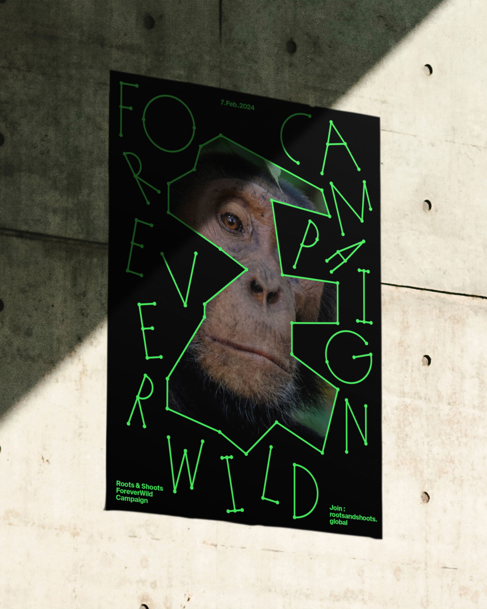
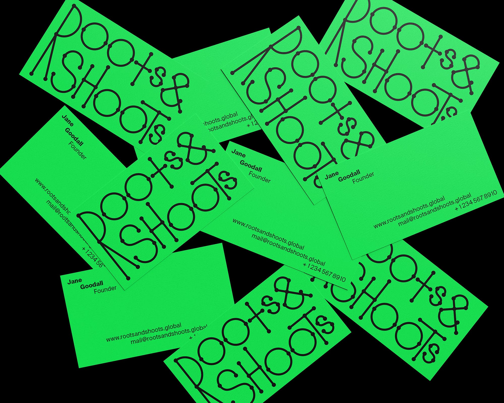
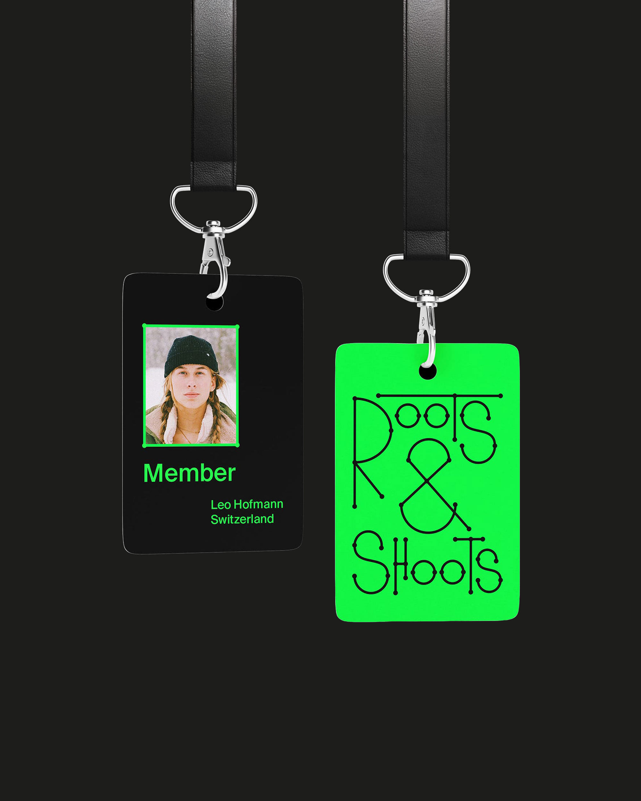
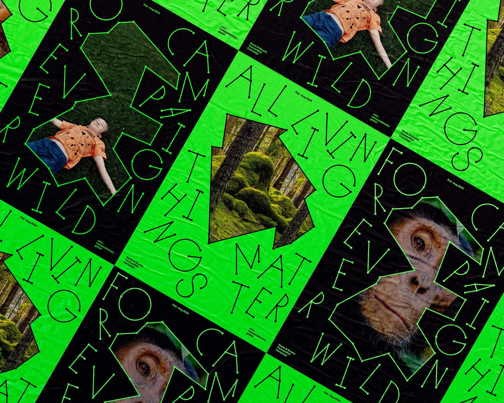

Roots & Shoots is a global non-profit organization that empowers young people to affect positive change through environmental activism. The context for a rebranding sparked from a world map since they act globally while having local branches in over 60 countries. Based on a world map grid, the custom display type was designed to reflect connected, playful, and organic energy. It is a dynamic identity system that has the potential to expand for various events and media.







